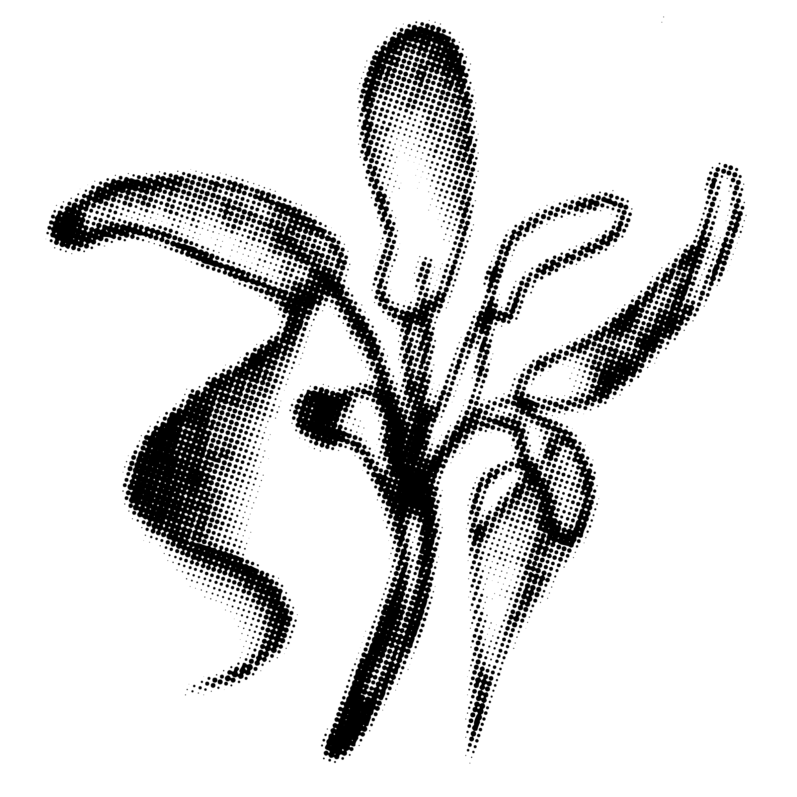

Welcome to my design archive. Here you will find the digital, analog, and photographic chronicles of my career to date.
Projects
Photography
I’m a Chicago-based designer currently working towards a Bachelor’s of Art in Graphic Design at the University of Illinois at Chicago. I strive above all else to imbue my design with narrative—narrative allows me to create a visual language with purpose and converse with my audience through sight alone. I view design as a means of storytelling and draw on my love for writing to influence my design process. I find value in this process over the outcome, in the messy iterations and scrapped ideas that go into making my final, curated piece. I enjoy mixing analog and digital work and find myself most captivated by typography, color, and movement.